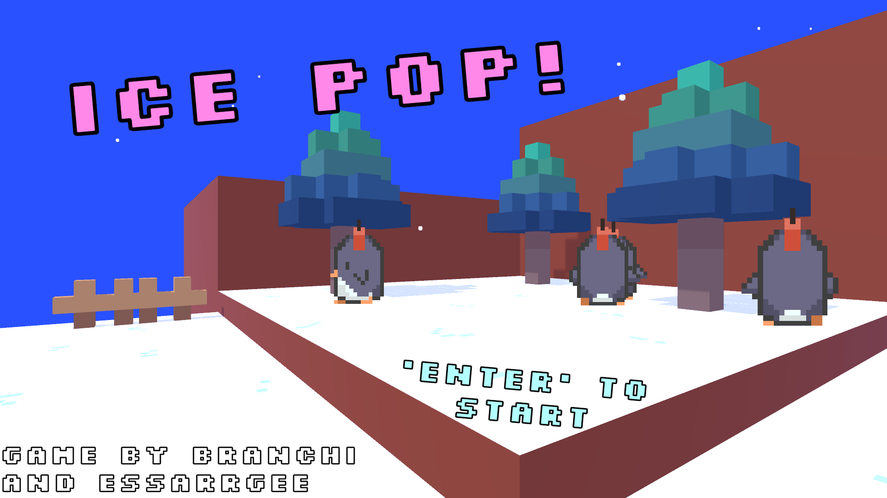
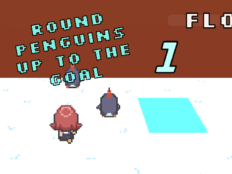
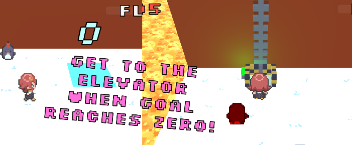
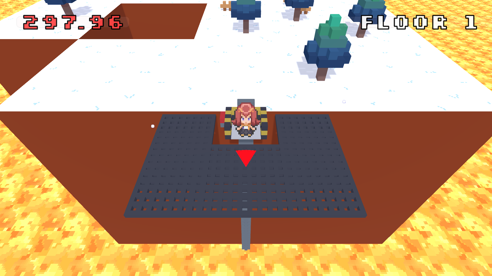

Ice Pop!
Image Gallery
   

Game Description
A survival minigame where you round up UNSTABLE EXPLOSIVE PENGUINS to the goal to unlock the elevator! Careful not to let them touch anything, or they’ll EXPLODE! Watch out for enemies too!
About
A game made under 72 hours for Ludum Dare 49, in collaboration with Branchi.
For this jam, the theme was "Unstable". We correlated that with bombs, and
going with the usual theme of penguins, we ultimately decided on making a game
about penguins that explode. Since we limited our scope this time, we had a bit
more time to polish some parts of the game, including adding music and sound
effects. We cut out some features due to time constraints, but this
feels the most fleshed out of our game jam projects to this date.
Stats
Status: Completed
Date Started: October 1, 2021
Date Completed (Game Jam): October 4, 2021